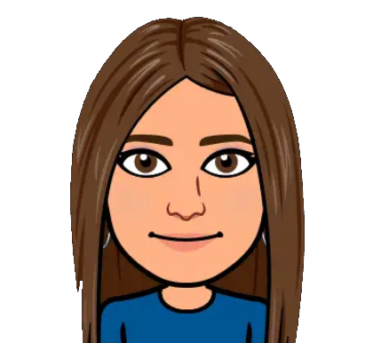
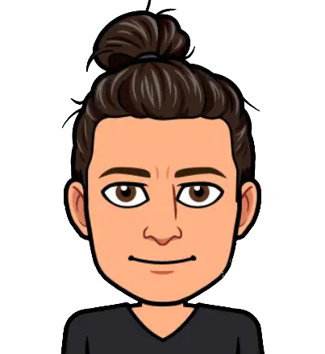

Kim jesteśmy
Paulina Fiedor
Zawsze miała umysł analityczny. Wychodzi z założenia że podstawą projektu jest dokumentacja, właśnie dzięki niej zespół może być pewien że wszystko będzie odpowiednio zpisane i uporządkowane. Doskonale posługuje się językiem angielskim, co pozwoli jej na tłumaczenie wszelkich potrzebnych dokumentów.

Zofia Wrona
Od zawsze była komunikatoywna i łatwo nawiązywała relacje. Posiada szerokie doświadczenie w zakresie people relations, zarządzania treściami w mediach społecznościowych, szególności instagramie, facebooku oraz tweeterze.
Piotr Bieniek
Dzięki swojej rozległej wiedzy z zakresu modelowania, projektowania, oraz obsługi rozmaitych obrabiarek przemysłowych w tym w szczególności druku 3D. Jest odpowiedzialny za budowę mechaniczną naszego CanSat-a, wykonanie wszyskich potrzebnych części, ich wymodelowanie a następnie wydrukowanie i złożenie w jedną sprawną całość.

Jakub 'Cixo' Gawęda
Od wielu lat zajmujący się programowaniem, posiadający doświadczenie w tworzeniu systemów operacyjnych oraz maszyn wirtualnych w C, C++ oraz Assemblerze. Od kilku lat zajmujący się również elektroniką oraz mechaniką. Ceni sobie tworzenie własnych autorkich rozwiązań i używanie ich nad ściąganie gotowców.
Aleksander 'Olek47' Szkrobol
Dzięki swojej bogatej wiedzy z zakresu security oraz tworzenia systemów safety-critical jest w stanie zaprojekotwać bardzo stabilny system potrzebny do wykonania misji, odpowiednio go przetestować jak również przewidzieć wszyskie ewentualności jakie mogą wydarzyć się podczas misji CanSat-a.